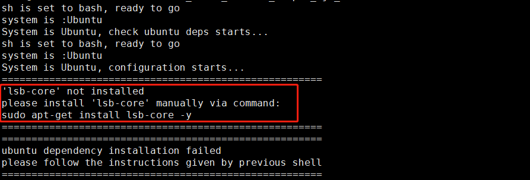

6.2. 环境安装
本章节主要介绍使用量化工具链前必须的环境准备工作。
6.2.1. 交付物使用说明
在进行量化工具链使用环境部署前，请提前解压地平线提供的整体SDK交付包，在 ai_toolchain_package 目录下找到量化工具链SDK的网盘下载链接，并将量化工具链SDK包下载到Linux开发机环境中。
6.2.1.1. 源码目录结构说明
解压量化工具链SDK源码包：
tar -xvf Ai_Toolchain_Package-release-vX.X.X-OE-vX.X.X.tar.xz
解压后的目录结构如下：
ai_benchmark: 目录下提供了常见的分类、检测和分割模型的评测示例，包括性能评测和精度评测两部分。
ai_toolchain: 目录下提供了一些模型算法的一系列示例。
horizon_model_convert_sample文件夹下为浮点模型转定点模型的转换示例。horizon_runtime_sample文件夹下为定点模型的上板示例。model_zoo文件夹下是一个模型库，包含了工具链示例模型编译的源模型和runtime模型。
package: 目录下包含了发布物运行的一些基础库和组件
board文件夹下为板端可执行程序。host文件夹下为x86开发环境下的环境依赖、工具依赖以及模型推理相关的libdnn库和头文件。
6.2.2. 开发机部署
对于开发机的环境部署，地平线支持使用Docker和手工安装两种方式，您只需要选择其中一种即可。
提示
地平线强烈建议您使用Docker方式，以避免在安装过程中出现问题。
6.2.2.1. 开发机准备
为了顺利地使用量化工具链，地平线建议您选择的开发机应满足以下要求：
硬件/操作系统 |
要求 |
|---|---|
CPU |
CPU I3以上或者同级别E3/E5的处理器 |
内存 |
16G或以上级别 |
GPU(可选) |
CUDA11、驱动版本Linux:>= 450.80.02* 适配显卡包括但不限于： 1)GeForce RTX 3090 2)GeForce RTX 2080 Ti 3)NVIDIA TITAN V 4)Tesla V100S-PCIE-32GB |
系统 |
CentOS 7、Ubuntu 18.04及以上 |
更多关于CUDA与显卡的兼容性问题请参考 NVIDIA官网信息 。
6.2.2.2. 使用Docker环境
为了帮助您快速使用量化工具链，地平线提供了包含完整开发环境的Docker镜像，大大简化了环境的部署过程。
在阅读此部分内容前，我们希望您的开发机中已经预装好了Docker的基础环境。 地平线要求的Docker基础环境信息如下：
Docker（>=1.12 建议安装18.03.0-ce）, 安装手册 https://docs.docker.com/install/。
NVIDIA Docker（2.0.3），安装手册 NVIDIA/nvidia-docker。
完成Docker环境安装后，需要将无root权限的用户添加到Docker用户组中。参考如下命令：
sudo groupadd docker
sudo gpasswd -a ${USER} docker
sudo systemctl restart docker # CentOS7/Ubuntu
# re-login
请从 地平线天工开物cpu docker hub ，获取模型转换编译需要使用的Docker镜像。
Docker镜像文件命名形式为 openexplorer/ai_toolchain_centos_7_xj3:{version}。
小技巧
执行命令时将 {version} 替换为您获取到的量化工具链SDK包版本号，例如： ai_toolchain_package/Ai_Toolchain_Package-release-v1.16.4-OE-v2.2.3a/ ，{version}= v2.2.3a 。
本地Docker镜像包版本，可以联系地平线技术支持团队获取。
开发机并不是必须含有GPU卡，一般使用CPU开发机加载Docker镜像即可做模型转换！
每个镜像文件在第一次使用前，需要拉取镜像。
镜像拉取命令为：
docker pull openexplorer/ai_toolchain_centos_7_xj3:{version}
然后执行以下命令运行Docker容器。
CPU开发机Docker容器执行以下命令：
// 运行 docker 镜像的命令 export version=v2.2.3a export ai_toolchain_package_path=/home/users/xxx/SDK/ai_toolchain_package export dataset_path=/home/users/xxx/data/ docker run -it --rm \ -v "$ai_toolchain_package_path":/open_explorer \ -v "$dataset_path":/data \ openexplorer/ai_toolchain_centos_7_xj3:"${version}"
GPU开发机 Docker容器执行以下命令：
// 运行 docker 镜像的命令 export version=v2.2.3a export ai_toolchain_package_path=/home/users/xxx/SDK/ai_toolchain_package export dataset_path=/home/users/xxx/data/ docker run -it --runtime=nvidia -e NVIDIA_DRIVER_CAPABILITIES=compute,utility \ -e NVIDIA_VISIBLE_DEVICES=all --rm --shm-size="15g" \ -v "$ai_toolchain_package_path":/open_explorer \ -v "$dataset_path":/data \ openexplorer/ai_toolchain_centos_7_xj3:"${version}"
注解
在执行上述命令时：
dataset_path为数据集文件目录，如果该目录不存在会导致加载问题，需要创建好后再运行命令。 您可以从ftp://vrftp.horizon.ai/Open_Explorer/eval_dataset获取数据集，然后创建该路径。
至此，您已经成功通过Docker镜像进入完整的量化工具链开发环境。
您可以键入 hb_mapper --help 命令验证是否可以正常得到帮助信息：
[root@d67382e74eea open_explorer]# hb_mapper --help
Usage: hb_mapper [OPTIONS] COMMAND [ARGS]...
hb_mapper is an offline model transform tool provided by horizon.
Options:
--version Show the version and exit.
--help Show this message and exit.
Commands:
checker check whether the model meet the requirements.
infer inference and dump output feature as float vector.
makertbin transform caffe model to quantization model, generate runtime...
若hb_mapper工具已正常输出日志， 说明环境已安装部署完成，请到 开发板部署 章节，进行开发板的环境安装。
6.2.2.3. 手工安装环境
提示
一般不推荐使用手工安装方式部署环境，强烈建议使用Docker镜像环境！
在执行手动安装前，地平线建议您选择的开发机需满足 开发机准备 章节的环境要求外，同时也需要满足以下软件环境要求：
Python3.6
libpython3.6
python3-devel
python3-pip
gcc&c++: 5.4.0
graphviz
确认满足以上条件后，手工安装过程需要您依次完成： 交叉编译器安装 、 AI和其他开发工具安装 两个步骤。
交叉编译器安装
gcc交叉编译器安装请阅读 安装交叉编译工具链 章节内容。
解压安装完成后，另外您需要在环境中新增一个变量
LINARO_GCC_ROOT，给其复制为交叉编译器的完整路径，命令如下：export LINARO_GCC_ROOT=/opt/gcc-ubuntu-9.3.0-2020.03-x86_64-aarch64-linux-gnu/要想 LINARO_GCC_ROOT 的配置永久生效，需要把以上命令添加到环境变量文件 “~/.bashrc” 的最后一行, 然后执行“source ~/.bashrc”命令，激活配置。
AI和其他开发工具安装
手动安装环境包请根据对应的版本下载，
version为您实际获取到的发布包版本。例如：Ai_Toolchain_Package-release-v1.16.4-OE-v2.2.3a/version=v2.2.3a。进入安装包
Ai_Toolchain_Package-release-vX.X.X-OE-vX.X.X/package/host/，执行以下命令启动安装：bash install.sh安装脚本会自动检查相应的环境，缺少相应依赖或配置会中断安装过程，并给出修正建议如下图。
请您根据建议补充依赖后，重新执行install脚本即可。
注解
如果修正建议指出是gcc/g++版本不符合要求，在安装完指定版本之后，您需要进入gcc/g++的安装目录下(一般在/usr/bin目录下)重新建立gcc和g++软链接：ln -s gcc-5.4.0 gcc 和 ln -s g++-5.4.0 g++
在顺利完成安装后，您可以键入 hb_mapper --help 命令验证是否可以正常得到帮助信息：
[root@d67382e74eea open_explorer]# hb_mapper --help
Usage: hb_mapper [OPTIONS] COMMAND [ARGS]...
hb_mapper is an offline model transform tool provided by horizon.
Options:
--version Show the version and exit.
--help Show this message and exit.
Commands:
checker check whether the model meet the requirements.
infer inference and dump output feature as float vector.
makertbin transform caffe model to quantization model, generate runtime...
若hb_mapper工具已正常输出日志， 说明环境已安装部署完成，请到 开发板部署 章节，进行开发板的环境安装。
6.2.3. 开发板部署
开发板部署需要您按照刷机说明，升级开发板的系统镜像到地平线整包交付物SDK对应的版本。开发板刷机步骤请阅读章节 镜像升级方法，刷机完成后，再将相关补充文件拷贝到开发板中即可。
注意
开发板使用的系统镜像版本一定要和量化工具链SDK版本匹配，均使用地平线整包交付物SDK版本
6.2.3.1. 补充文件准备
量化工具链的部分补充工具未包含在系统镜像中，这些工具已经放置在 Ai_Toolchain_Package-release-vX.X.X-OE-vX.X.X/package/ 安装包中，
进入到 Ai_Toolchain_Package-release-vX.X.X-OE-vX.X.X/package/board 执行install脚本。
执行命令如下：
bash install.sh ${board_ip}
注解
其中，${board_ip} 是您为开发板设置的IP地址，请确保在开发机上可以访问该IP。
成功安装后，重新启动开发板，在开发板上执行 hrt_model_exec 可以验证安装是否成功。
6.2.4. 版本管理工具使用说明
本章节主要介绍ddk_vcs版本管理工具的使用说明，便于开发者了解当前开发机环境中量化工具链依赖包的版本情况。
工具包括以下功能：
ddk_vcs list;
ddk_vcs install;
ddk_vcs uninstall;
ddk_vcs patch;
ddk_vcs show;
6.2.4.1. ddk_vcs list
ddk_vcs list 用于列出已安装的软件包。
不加参数执行此命令时，结果会展示当前已安装的各个模块的信息。使用示例如下：
[horizon@gpu-dev067 ai_toolchain]$ ddk_vcs list
Host package version: v2.0.3
The following packages versions
Platform Package Version MD5
--------------- --------------- ------- -------------
aarch_64 appsdk 032419 093e13b44e
aarch_64 dnn 1.8.1g aff0f6f4de
x86_64_gcc5.4.0 dnn_x86 1.8.1g e8e6bf9ed5
x86 horizon-nn 0.13.3 origin:0.13.3
x86 horizon-nn-gpu 0.13.3 origin:N/A
x86 horizon-tc-ui 1.6.4 origin:1.6.4
x86 hbdk 3.28.3 origin:3.28.3
注解
最后几行的origin信息会在每次使用OE包内的install脚本进行安装后更新为当前环境下的版本， 后续在使用ddk_vcs进行安装时则不会改变，只会改变Version的值。
使用 -p 参数以后会显示当前可以安装的模块版本情况，可以通过 ddk_vcs install 进行安装，使用示例如下：
[horizon@gpu-dev004]$ ddk_vcs list -p
Host package version: 1.5.1
The following packages versions
Platform Local Package Version MD5
--------------- ----------------------------- ------- ----------
aarch_64 appsdk_1.9.0.tar.gz 1.9.0 bf01140c9d
aarch_64 bpu_predict_1.10.2.tar.gz 1.10.2 5b6e5dd6c5
aarch_64 dnn_1.1.2a.tar.gz 1.1.2a fdb5729f4f
x86_64_gcc5.4.0 bpu_predict_1.10.2.tar.gz 1.10.2 4dbdd980a7
x86_64_gcc5.4.0 dnn_x86_1.1.2a.tar.gz 1.1.2a 5bf5fcd4fe
6.2.4.2. ddk_vcs install
ddk_vcs install 用于对安装包进行安装。
用户可以直接通过 ddk_vcs install 将对应的模块tar包进行安装。安装时需要指定对应的platform。使用示例如下：
[horizon@gpu-dev004]$ ddk_vcs install bpu_predict_1.10.2.tar.gz -p aarch_64
bpu_predict installed successfully, version: 1.10.2, platform: aarch_64
[horizon@gpu-dev067 ai_toolchain]$ ddk_vcs install hbdk-3.28.3-py3-none-linux_x86_64.whl horizon_nn-0.13.3-py3-none-any.whl
hbdk-3.28.3-py3-none-linux_x86_64.whl installed successfully
horizon_nn-0.13.3-py3-none-any.whl installed successfully
在使用 ddk_vcs list -p 后用户可以得到自己当前host package中各个模块包的版本信息，
然后使用 ddk_vcs install 可以很方便地切换各个版本，使用示例如下：
[horizon@gpu-dev004]$ ddk_vcs install bpu_predict==1.7.2 --platform aarch_64
bpu_predict installed successfully, version: 1.7.2, platform: aarch_64
如果本地没有对应版本可以指定安装包位置进行安装。
6.2.4.3. ddk_vcs uninstall
ddk_vcs uninstall 用于卸载指定模块。使用示例如下：
[horizon@gpu-dev004]$ ddk_vcs uninstall bpu_predict --platform aarch_64
Start to uninstall modules, platform: aarch_64
bpu_predict uninstalled successfully, version: 1.10.2, platform: aarch_64
6.2.4.4. ddk_vcs patch
使用 ddk_vcs patch ddk_patch.tar.gz 可以安装预先制作好的patch包。使用示例如下：
[horizon@gpu-dev004]$ ddk_vcs patch ddk_patch.tar.gz
bpu_predict installed successfully, version: 1.7.2_patch0, platform: aarch64
6.2.4.5. ddk_vcs show
ddk_vcs show 用于显示有关已安装软件包的信息。使用 ddk_vcs show [模块名] ，可以展示对应模块的信息。使用示例如下：
[horizon@gpu-dev004]$ ddk_vcs show bpu_predict
Host package version 1.5.1
The following packages versions
Platform Package Version MD5
--------------- ----------- ------------- ----------
aarch_64 bpu_predict 1.10.2 5b6e5dd6c5
x86_64_gcc5.4.0 bpu_predict 1.10.2_patch1 d4f8e37921
如果2个架构内有同名依赖，可以使用 -p/--platform 指定架构名进行过滤。使用示例如下：
[horizon@gpu-dev004]$ ddk_vcs show bpu_predict -p aarch_64
Host package version 1.5.1
The following packages versions
Platform Package Version MD5
-------- ----------- ------- ----------
aarch_64 bpu_predict 1.10.2 5b6e5dd6c5